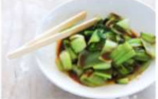

YOKO'S KITCHEN
JAPANESE COOKING CLASSES
JAPANESE COOKING CLASSES

A five week introduction to traditional Japanese vegetarian meals,teaching you a selection rice and noodle dishes

An intensive one-day courses looking at how to create the delicious sauces for use in a range of Japanese cookery
| Popular Reciper |
| Yakitori (grilled chicken) |
| Tsukune (minced chicken patties) |
| Okonomiyaki (savory pancakes) |
| Mizutaki (chicken stew) |
| Contact |
|
Yoko's Kitchen
|